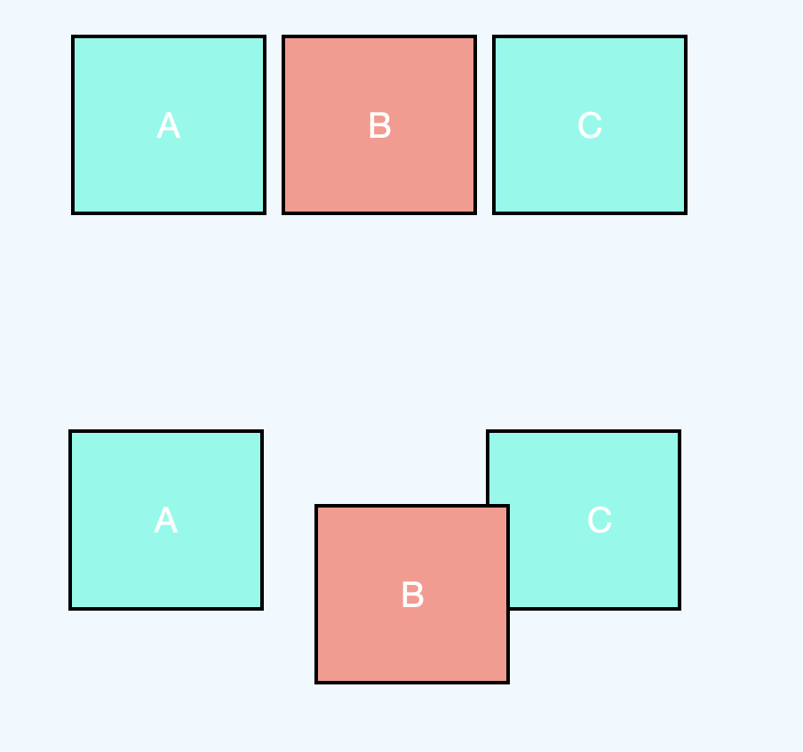
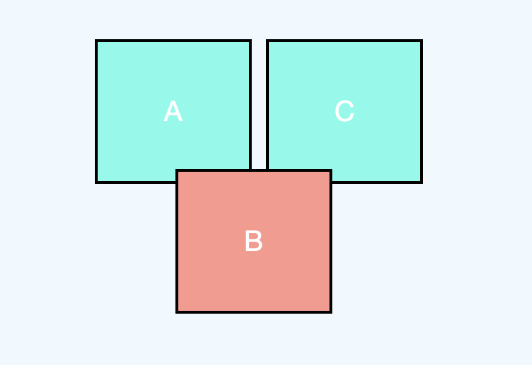
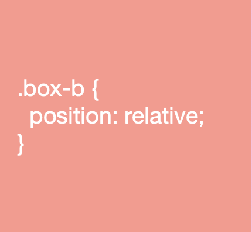
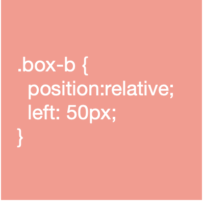
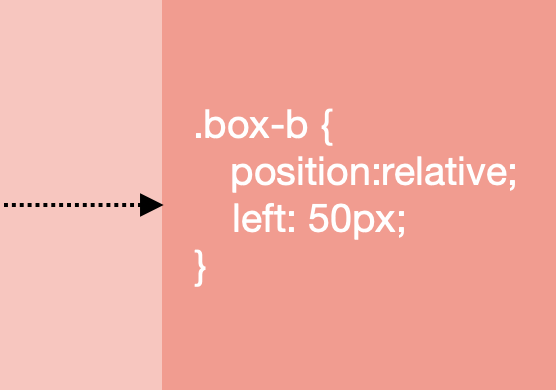
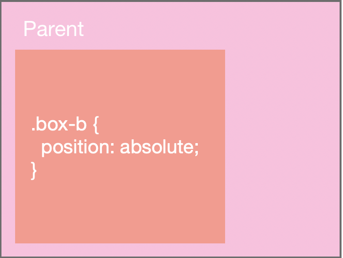
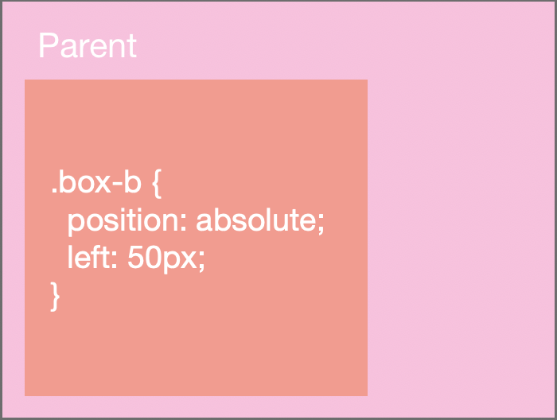
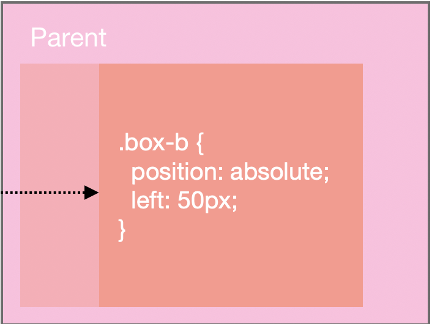
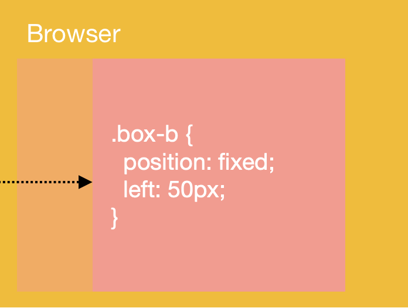

| Let's start with some terminology... |
Position properties & values
The CSS position property allows us to determine where an element is positioned on a web page / HTML document. Here are some of the following values the position property can be assigned to: Relative, Absolute, or Fixed. On a CSS doc, it could look something like this:
position: relative;
position: absolute;
position: fixed;
Additionally, once the position property and its value is set, we can also use the following directional properties and set values to determine the element’s final position location. On a CSS doc, it could look something like this:
top: 1px;
right: 20%;
bottom: auto;
left: inherit;
What does "to be taken out of flow" mean?
To take an element out of the document flow, is when no space is created for the element within the page's layout. This means that the surrounding elements will reposition themselves as though the element did not exist
| Part of flow |
|---|
|  |
| Out of flow |
|  |
| Relative Positioning |
| 1. Maintains element in the normal flow |
|  |
| 2. If directional property & values to be applied in the CSS doc |
|  |
| 3. Repositions element relative to itself (moves from its normal position) |
|  |
| Absolute Positioning |
| 1. Removes element from the normal flow |
|  |
| 2. If directional property & values to be applied in the CSS doc |
|  |
| 3. Repositions element relative to its closest parent container |
|  |
| Fixed Positioning |
| 1. Removes element from the normal flow & repositions element relative to the browser or viewport |
|  |
| 2. Position remains fixed on screen when scrolled |
 |